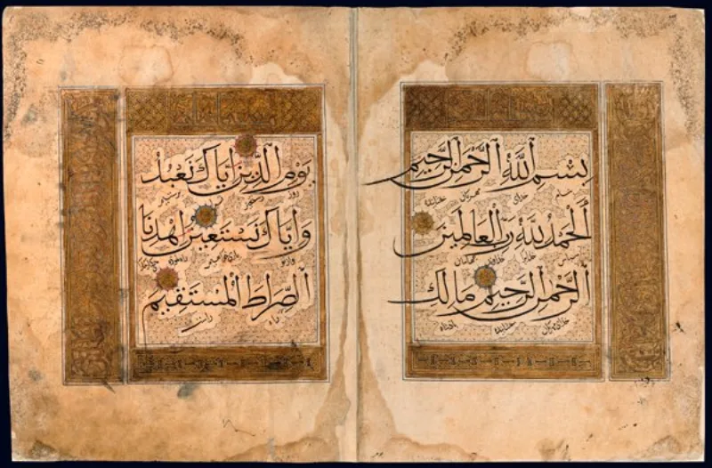
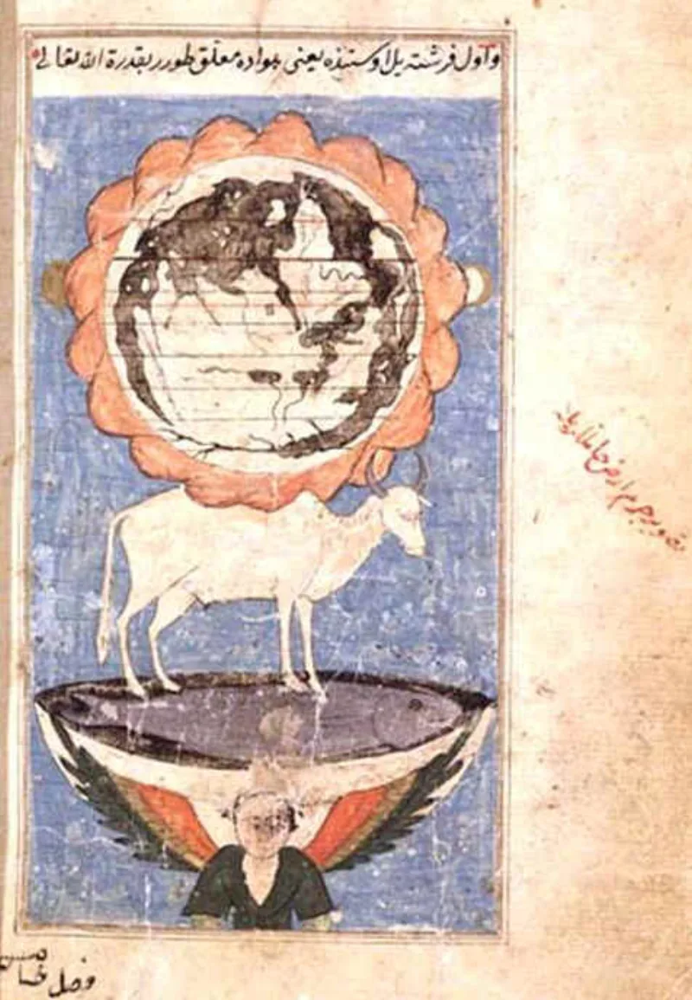
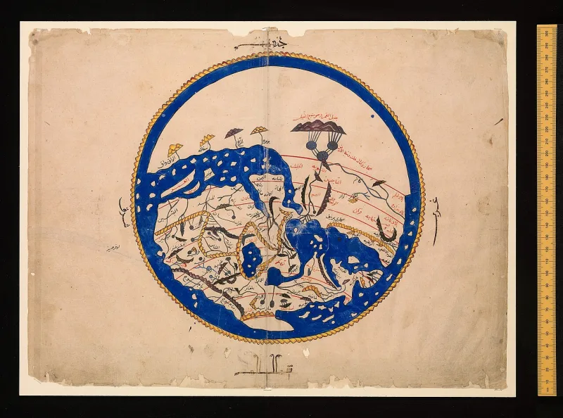

Muslim scholars have a real answer here. Say so before your friend does.
Quran 18:86 says Dhul-Qarnayn travelled until "he reached the setting-place of the sun; he found it setting in a muddy spring." Quran 18:90 gives the mirror image, a rising-place where the sun comes up on people with no shelter.
Al-Tabari preserves narrations that read it literally: the sun really sets in the spring. Tafsir Ibn Abbas (Tanwir al-Miqbas) describes "a blackened, muddy and stinking spring." Ibn Kathir, by contrast, reads it as appearance — the sun only looked as though it set there. A hadith in Sunan Abi Dawud 4002 says it sets in a spring of warm water.
Albani graded that chain sahih, though some scholars say the spring wording belongs to the narrator, not to Muhammad.
IslamQA 176375 gives a fair reply. The verse says he found it — this is what Dhul-Qarnayn saw from where he stood.
English speakers say sunset without meaning the sun moves. He simply reached the westernmost point of his journey, a shore where the sun seemed to sink into dark water.
The authentic description of the sun, they add, is that it prostrates beneath the Throne (Sahih al-Bukhari 3199), which is not physical.
The Arabic can carry that reading, so this is not a settled case. But the defence is modern.
Quran 18:90 gives a matching rising-place, and the journey is built as a mirror. The earliest commentators read real cosmology.
The defence needs them to have misread their own book.
Genuinely arguable, so do not push it hard. Raise the tafsir, not the ridicule.
The useful question is simply why the first Muslim generations understood it the way they did.
"How did al-Tabari and Ibn Kathir understand this verse? That is the part I find interesting."



They say the verse reports what the traveller saw, as we say sunset.
IslamQA 176375 answers that the verse describes what Dhul-Qarnayn saw from where he stood. He found it means it appeared so to him, just as English speakers say sunset without meaning the sun moves. He simply reached the western end of his journey. It was a shoreline where the sun seemed to sink into dark water. That is the language of appearance, not a claim about the heavens.
The wording of the Abu Dawud hadith is disputed. Some hold that the spring phrase belongs to the narrator and not to the Prophet, so it cannot settle doctrine. The sound description, they add, is that the sun prostrates beneath the Throne (Sahih al-Bukhari 3199). That is a statement about the unseen, not about physics.
Genuinely open, so go gently: ask how the first Muslims read it.
The Arabic can carry a reading about appearance, and the force of the supporting hadith is disputed. So this is not admitted.
But the appearance defence is modern, read back into the text. Quran 18:90 gives a matching rising-place. The journey is built as a mirror. And the earliest tafsir record shows that the first Muslim generations read it as real cosmology, in line with late-antique Near Eastern belief. The defence needs the earliest readers to have misread their own book.